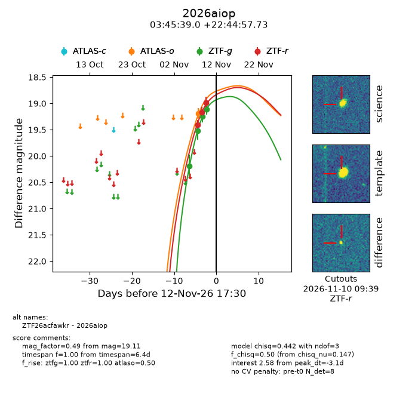
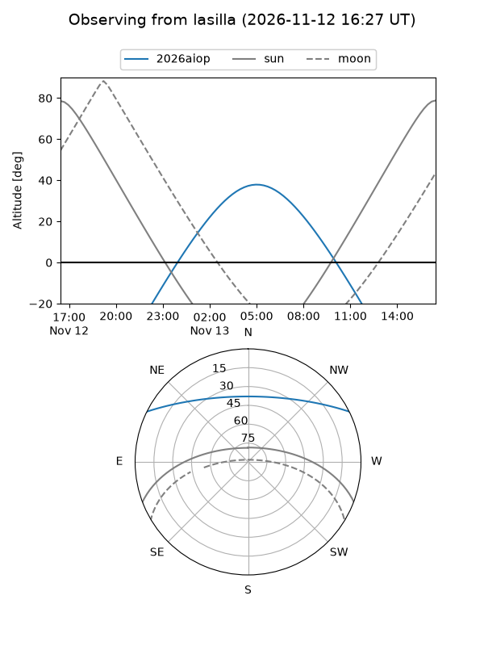
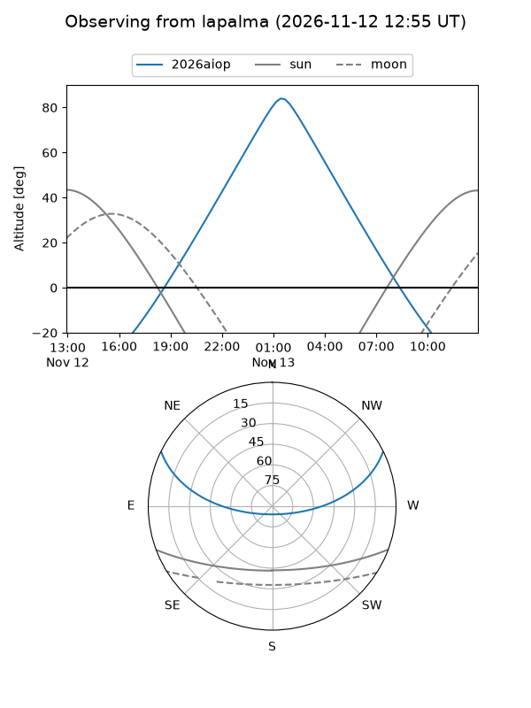
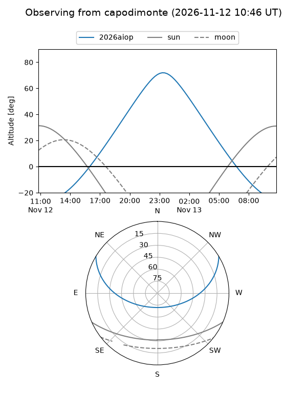
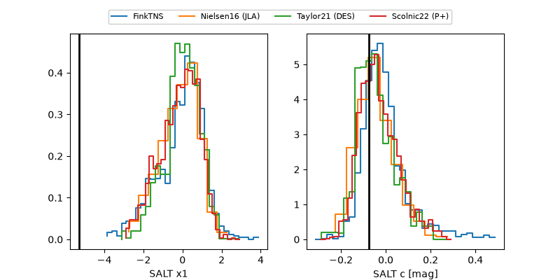

2026aiop
Target 2026aiop at 2026-11-12 17:35
Aliases and brokers:
FINK-ZTF: ztf.fink-portal.org/ZTF26acfawkr
Lasair-ZTF: lasair-ztf.lsst.ac.uk/objects/ZTF26acfawkr
ALeRCE-ZTF: alerce.online/object/ZTF26acfawkr
YSE-PZ: ziggy.ucolick.org/yse/transient_detail/2026aiop
TNS name: wis-tns.org/object/2026aiop
Direct TNS query: direct search
alt names
ZTF26acfawkr (ztf,fink_ztf)
2026aiop (tns,yse)
Coordinates:
equatorial (ra, dec) = 56.4124,+22.74937
equatorial (HMS+DMS) = 03:45:38.98,+22:44:57.73
galactic (l, b) = (167.3298,-24.73996)
Flags:
peak dt: -3.1
Photometry:
last atlaso=19.19, ztfg=19.11, ztfr=18.99
1 atlaso, 4 ztfg, 3 ztfr detections
Lightcurve

Visibility



Additional plots
